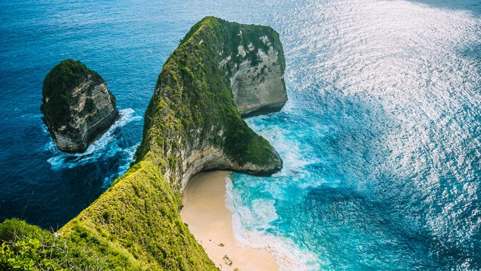

Сколько стоит жить на Бали:
цены на жилье, еду, транспорт, серфинг, визу, перелет.
Я уже четвертую зиму провожу на Бали. Со мной произошло здесь все, что только возможно. Нас ограбили, я жил
один очень скромно, жил с женой в разных районах (подешевле и подороже). Я точно знаю, сколько стоит жить на
Бали. Сейчас все разложу по полочкам.
Со своего личного опыта расскажу сколько стоит жить на Бали в 2021
году, тратя от 350$ в месяц.
Причем расскажу цены на Бали по всем пунктам: жилье, еда, транспорт,
серфинг, виза, перелет.
По каждому покажу минимальный порог (прям жесть и тлен) и уже средний комфортный
уровень жизни.
И естественно все буду показывать вживую).
Сколько стоит жизнь на Бали по категориям:
- Цены на жилье - показал 3 типа жилья от самого дешевого до хорошей виллы. Показал, как найти жилье за 72$ в месяц.
- Цена на транспорт (байк, машина). Показал ходовые модели и их стоимость.
- Сколько стоит виза на Бали и какую лучше делать?
- Цена на перелет на Бали: как найти самую дешевую цену в месяце?
- Еда на бали: цены в кафе и ресторанах? Сколько стоят фрукты и где их покупать?
- Сколько стоит серфинг на Бали? Как снять доску за 4$.
Стоимость жилья
Самый простой способ узнать цены на жилье - зайти на booking и указать даты. Цены могут быть разные, но
непонятно, как оно выглядит вживую. Я в видео показываю разные типы жилья в разной ценовой
категории.
Минимальная стоимость жилья может быть за 72 доллара и выше. Это хостелы.Следующий вариант -
гесты (Guest house). Очень популярный тип жилья на Бали. В них общая территория, кухня, бассейн и отдельная
комната со своим санузлом. Гесты размещены не на первых линиях возле моря, но их вполне достаточно для
хорошего отдыха.
Их стоимость - 300-500 дол. в месяц.Мы последний раз жили больше 3-х месяцев в
отеле.
Плюсы:
- безопасность (есть охрана постоянно);
- ресепшн;
- интернет постоянный;
- пешком можно было дойти до океана (в нашем случае).
Стоимость нашего отеля была 700-800 дол/мес. Дальше расскажу про виллы. Они бывают очень разных типов. От 750 дол/мес. стоимость проживания на вилле.
Транспорт
Цена байка от 50 до 70 дол - самый простой. А вот 90-115 дол - байки более качественные. Стоимость
бензина -
приблизительно 0,50 центов. Тут левостороннее движение. Вот к этому стоит привыкнуть. Движение
стихийное,
без особых правил.
Для семьи придется арендовать машину. Ее стоимость от 300 дол/мес. Есть ли на
Бали
пробки? Да, конечно, есть. Все зависит от района. Если это туристические районы, то там они всегда.
Но ко
всему можно привыкнуть)
Вы должны иметь права и шлем, если на байке. Полиция делает облавы. Если
у вас ни
того, и другого, то от вас потребуют сразу деньги. Тут прям взятка почти законная. Расчет сразу на
месте.
Сколько стоит виза?
Для украинцев на 30 дней есть бесплатная виза. Продлить такую визу невозможно. Есть 2 альтернативы решить этот вопрос:
- визараны - прошло 30 дней и вы улетели в другую страну и можно в тот же день вернуться. Часто летают в Куала-Лумпур. В 2 стороны приблизительно 120 долларов на человека, но все зависит от сезона.
- социальная виза - лучше всего сделать сразу до прилета на Бали. Стоимость - 80 дол с человека. Виза на 60 дней нахождения на Бали. Лучше всего делать через агента. Агент стоит - 60 дол с человека за продление визы. Так можно делать 6 месяцев.
- бесплатная виза на 30 дней;
- виза по прибытию - ставиться в аэропорту, купить за 35-38 долларов перед прохождением контроля. Эта виза на 2 месяца.
- социальная виза - лучше готовить заранее.
Стоимость перелета
Усредненно стоимость на одного человека в одну сторону будет около 500 долларов. Все зависит от того, откуда вы летите. Перелет тяжелый. Около 15 часов нужно лететь. По прилету вы оказываетесь в другом часовом поясе. Для акклиматизации нужна где-то неделя.
Сколько стоит еда?
Тут есть все: кафе, рестораны, старбаксы, местная еда (варунга). Вы можете миксовать как хотите, с
этим нет
никаких проблем. Стоимость точно также может отличаться. В местных кафе большая порция блюда стоит
1-1,5
доллара. В тоже время кофе в старбаксе будет стоить 5 долларов. Как видите, разница есть.
Фрукты можно
покупать на рынке и в супермаркетах.
Развлечения
Для тех, кто впервые на Бали, точно нужно пойти посерфить. Услуги инструктора за 1 урок будут стоить
25
долларов. Доска - 4 дол /час. Очень много туристических мест - бесплатные или стоят очень мало.Если
хотите
весь месяц пройтись по всем интересным местам, то закладывайте в бюджет 200-300 долларов с человека.
Подняться на вулкан - 170-200 долларов. Это того стоит.Есть коворкинги для тех, кто хочет
поработать. Ведь
Wi-Fi зачастую не очень хорошо работает. Хотя они есть везде.Итак, минимальный ценник на 1 человека
будет
приблизительно 359 долларов на месяц. Средний вариант для комфортного отдыха - 1922 доллара.
И
если
статья вам понравилась и была полезной, не забудьте поставить "стрелку вверх" в конце статьи. Мне
будет
приятно)